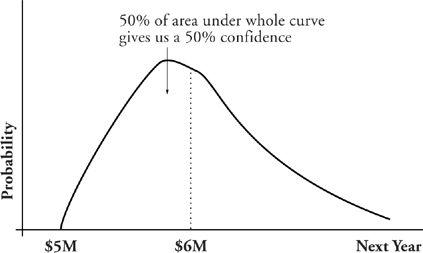

Risk Containment
How you deal with a risk when it materializes depends on its nature, the extent of its likely damage to your prospects of success, and its likelihood.
In the simplest case, you simply take its impact on the chin, pay for it, and move on. The payment may be in the form of money and/or time. Example: You hoped your test engineer wouldn’t leave to take another job, but she does. You bring in an expensive replacement, pay all the attendant hiring and training costs, and then watch as your project limps along for several weeks while the new person gets acclimated. Total cost: $35,000 plus a month of probably unrecoverable delay.
Where do that money and time come from? It may look like the money is scrounged and the time is negotiated, but in order for this to happen, there had to be some flexibility built into the budget and schedule. This flexibility is what I shall call a reserve.
When bad things happen without warning, we have to scurry around to get the resources to offset them. When such bad things are anticipated in advance through the mechanism of risk management, there is typically an explicit reserve set aside to pay for them. There is not a reserve for each risk, but one for the whole endeavor. The goal is to place in reserve enough time and money to give at least a fifty-fifty assurance that there will be enough to cover the costs of those risks that do materialize. If your uncertainty about cost looks like this: then a risk reserve to give a 50 percent confidence level would be $1 million over and above the minimum budget of $5 million. (You would expect to have a similar risk diagram for schedule and use it similarly to determine the risk reserve of calendar time.)

The risk reserve is money and time budgeted for work that may not need to be performed! Without risk management, such reserves would be trimmed in order to come up with a more acceptable budget and price. That is how we so often end up with a budget and schedule that assume no risk will ever materialize (i.e., the 0 percent likely case). Since risk management forces an explicit declaration of uncertainty, it’s not a big additional step to budget for some reasonable expectation of risks to materialize.
Setting aside a risk reserve with a 50 percent or better confidence level is called risk containment. When risks are paid for out of this reserve, they are said to be contained. It’s not a major intellectual effort to know how much time and money are needed to contain the most common risks of our work (half a dozen carefully performed project postmortems supply most of the data). The major effort is to keep the risk reserve from being eliminated by someone who wants desperately to hear lower numbers.